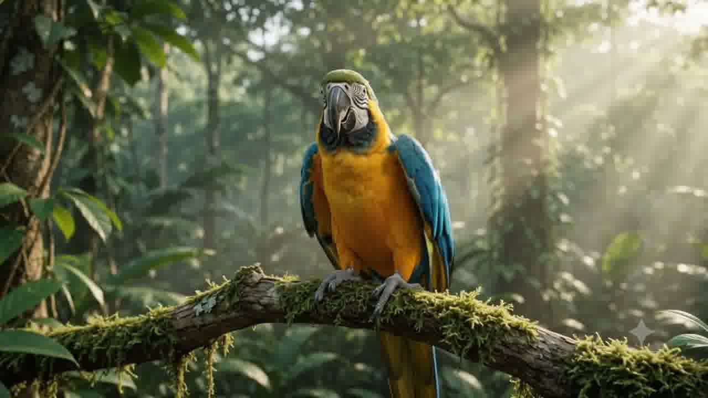

Forest home
Blue-and-yellow macaws live in tropical forests and woodlands across parts of South America.
A JOURNEY INTO THE WILD 01 / THE MACAW
In the hush of the forest, a flash of blue and gold catches the light.
The blue-and-yellow macaw brings a flash of gold and sky blue to the tropical forest.
Discover the details
Blue-and-yellow macaws live in tropical forests and woodlands across parts of South America.
These expressive parrots often travel in pairs and use loud calls to stay connected.
Long wings and a balancing tail help them move through the open canopy.